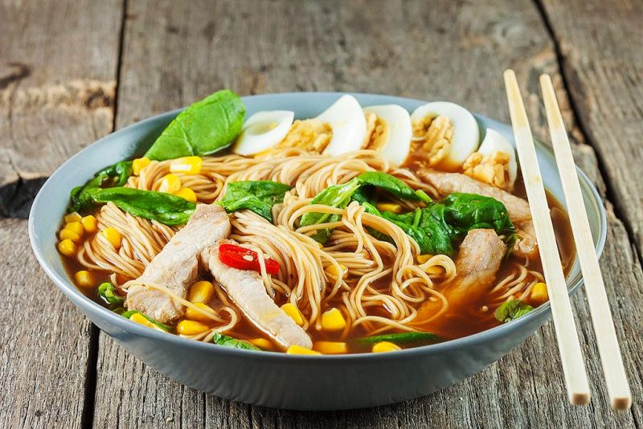
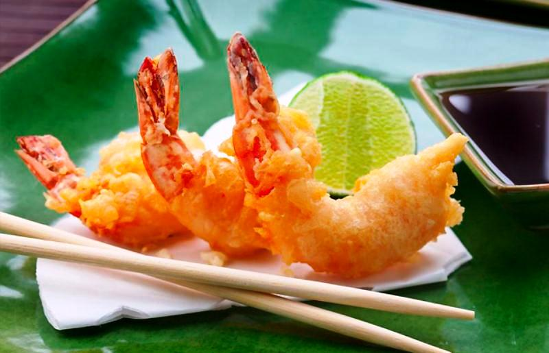

Японская кухня
Японская кухня
Япония всегда считалась одной из самых загадочных и привлекательных стран мира для туристов. Нам мало что известно о ее кухне, но все мы знаем, что такое суши и роллы. Минимализм – это главный критерий японцев. Пища, которую они употребляют, не требует особой варки или какой-либо обработки. И если вам посчастливится побывать в Японии, то посетите не только знаменитую гору Фудзи, но и какой-нибудь местный ресторан, что бы попробовать японскую кухню.
Блюдо №1. Рамен

Вторую строчку традиционных японских блюд занимает рамен. В Азии очень популярны густые супы: тайский суп Рад На заменяет сразу первое и второе блюдо. Японский рамен – его близкий родственник. Его продают как торговцы уличной едой, так и рестораны высокой кухни. Рамен представляет собой своеобразное ассорти, ведь в его составе любой компонент может быть заменен другим. Основа – мясной бульон из курицы, свинины, а иногда и рыбы. В бульоне варят широкую пшеничную или рисовую лапшу, приправляя ее яйцами, зеленым луком и водорослями. Мастерство повара рамена в Японии измеряют, проверяя текстуру мяса в супе: оно должно напоминать пюре.
Блюдо №2. Темпура

Еще одно традиционное японское блюдо по праву занимает вторую позицию. Жители Страны восходящего солнца не понимают популярности американского фаст-фуда – в частности, картофеля фри. У португальских миссионеров японцы подсмотрели рецепт постного блюда и сделали из него культ. В каждом доме страны можно найти специальную сковороду для темпуры, которую достают перед вечеринками, дружескими посиделками. На небольшом количестве масла в ней обжаривают свежие креветки, рыбу, овощи и даже фрукты. Особенный вкус ему придает кляр из яйца, ледяной воды и муки, взбитый до состояния воздушных пузырьков.